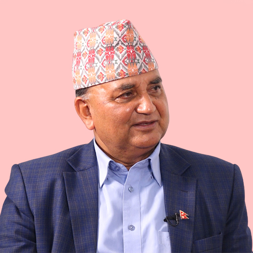

काठमाडौं जिल्लामा कुल मतदाता ७१०७०१ रहेका छन्, जसमा पुरुष ३४४१९४, महिला ३६६५०७ र अन्य ० मतदाता समावेश छन्। यस जिल्ला बागमती प्रदेशमा पर्दछ। यस जिल्लाअन्तर्गत १० प्रतिनिधि सभा निर्वाचन क्षेत्रहरू रहेका छन्।





![रुपा महर्जन [श्रेष्ठ]](../../npcdn.ratopati.com/election/candidates/2082/rupa-maharjan-shrestha_OzNFCcylWO.jpg)